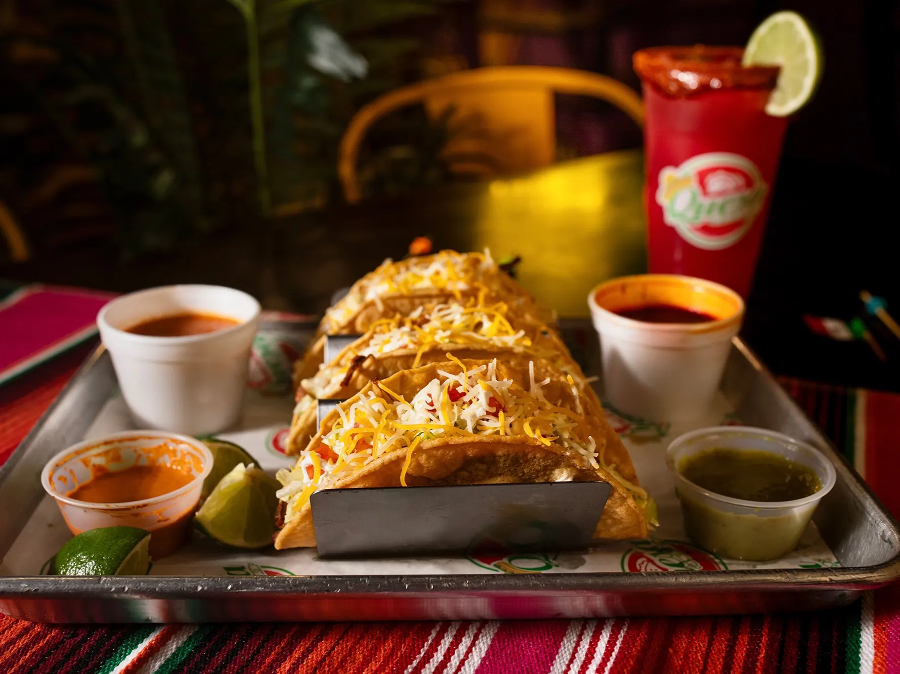

QuesaLoco
QuesaLoco started as a food truck with lines that wrapped around the block on Friday nights, and now the brick-and-mortar on Fairbanks Ave carries that same joyful chaos. This is birria country: the quesabirria tacos fold beef and cheese into a crisp tortilla built for dunking in rich consommé, and the birria ramen takes that obsession somewhere brand new. Add loco elote on a stick, birria pizza for the undecided, and a menu that reads like a greatest-hits list of Mexican street food. Go expecting noise, flavor, and no regrets.